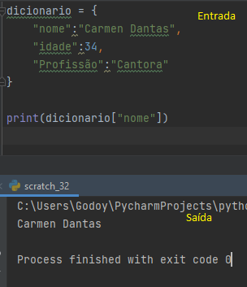
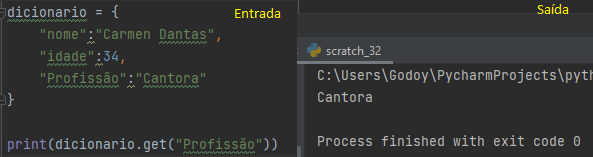
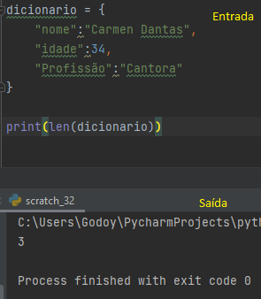
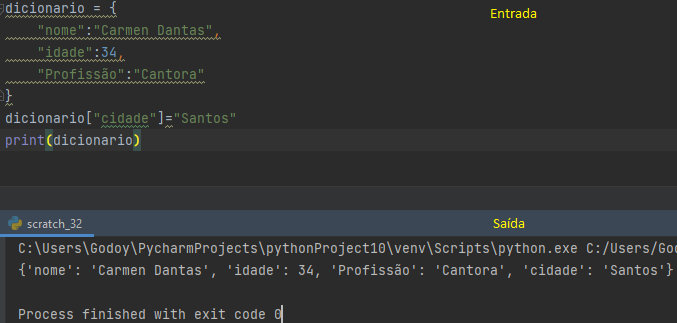
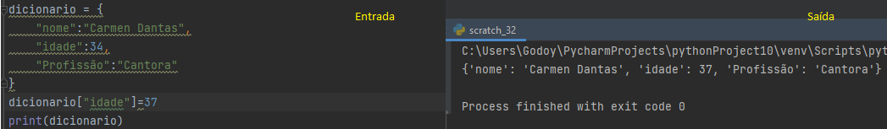
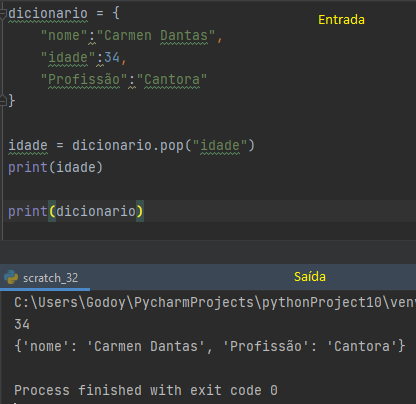
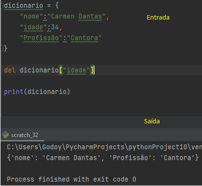
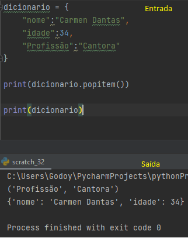
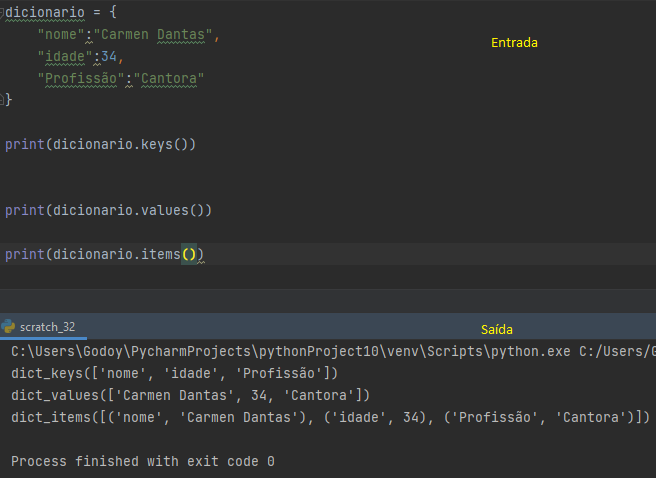

Dicionários são estruturas onde os valores estão associados a uma chave
Podemos declarar usando chaves {},ou a função Dict.
As chaves e seus valores podem ser de diferentes tipos de dados(int,float,bool,entre outros)
Para acessarmos um valor utiliamos:
Para obtermos os valores de um dicionario utilizamos o método Get
Podemos utilizar a função Len para verificarmos o tamanho de um dicionário
Podemos adicionar novos valores infonmando o novo par chave-valor
Basta atribuir à chave o valor atualizado
Para remover um valor podemos utilizar o método Pop,que recebe como parâmetro a chave associada ao valor que deve ser removido
Ou a declaração Del:
O método popitem remove sempre o último par de um dicionário,retornando o par removido em formato de tupla.
Para atualizar um dicionário utilizamos o método Update que recebe outro dicionário como parâmetro para atualizar o já existente.
Método Keys: retorna um estrutura com as chaves do dicionário
Método Values: retorna uma estrutura com os valores do dicionário
Método Items: retorna uma estrutura com o par chave,valor
